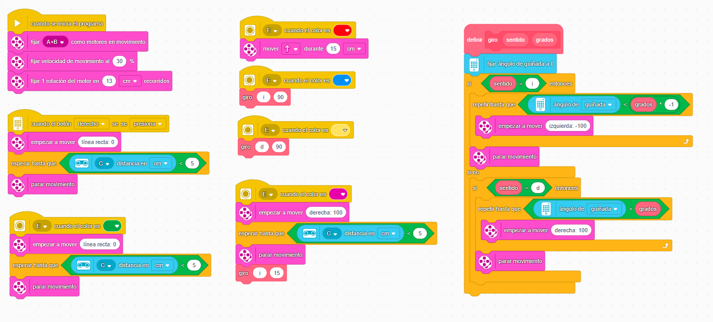

Tarea 1. Movimiento con tarjetas
Esta tarea consiste en realizar un programa que permita darle instrucciones al rover empleando el sensor de color con el siguiente código:
Rojo- Avanza 15 cm (recordemos que una rotación de motor son 13cm)
Azul - Giro a izquierda 90º (recomendamos emplear la librería giro)
Amarillo - Giro a derecha 90º (incluida en la librería)
Verde - Adelante hasta encontrar objeto a menos de 5cm
Morado - Girar hasta encontrar objeto y giro sentido contrario de 15º (no está en la librería)
